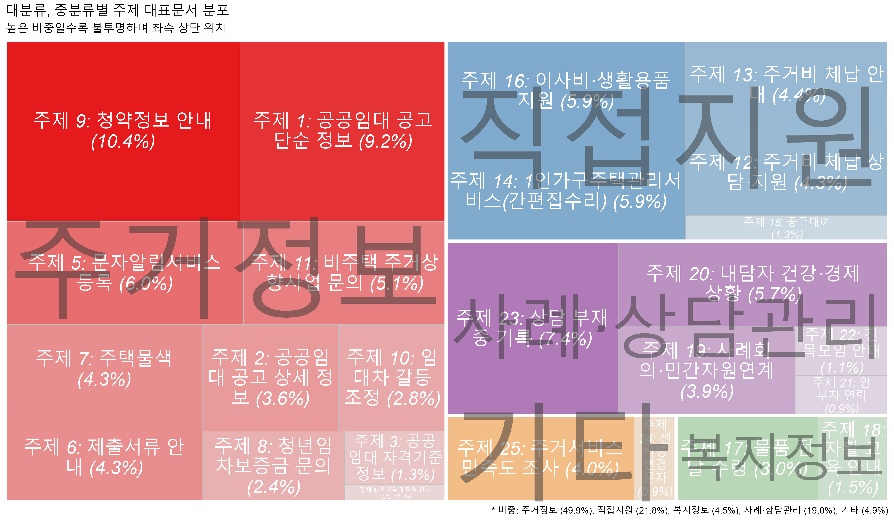

## 패키지 불러오기
pacman::p_load(
"tidyverse", "tidytext", "stm",
"data.table", "knitr", "gt", "scales", "treemapify", "RColorBrewer")들어가기
토픽모델링 후 주제의 주요 단어나 분포 등을 추출하고 시각화한다. stm 패키지의 결과물 추출하는 함수 사용 후, 표 형태는 gt 패키지로 편집이 편하게 워드 파일 형식으로, 시각화는 ggplot2, treemapify 등으로 이해를 돕는 그래프를 만든다.
1. 데이터 준비하기
실습에 필요한 데이터를 먼저 다운 받는다.
| 샘플 데이터 | 설명 |
|---|---|
| 주제정보.csv | 주제정보를 담은 파일 |
| stmFinal_fit.rds | stm 모델 |
| documPerTopic.csv | 선별한 대표문서 파일 |
1.1. 패키지 불러오기
분석에 필요한 패키지를 불러온다.
1.2. stm 결과 불러오기
주제정보 불러오기
이전 글에서 확정한 주제 정보를 불러온다.
list_topicLabled <- fread("result/stm_labelling/주제정보.csv")[
, `:=` (
topicLabel_f = factor(x = paste0("주제 ", topicNumber_f, ": ", topicName_f),
levels = paste0("주제 ", topicNumber_f, ": ", topicName_f),
labels = paste0("주제 ", topicNumber_f, ": ", topicName_f)),
topicGroup_f = factor(topicGroup_f,
levels = c("주거정보", "직접지원", "복지정보", "사례·상담관리", "기타"),
labels = c("주거정보", "직접지원", "복지정보", "사례·상담관리", "기타"))
)]각 열에 대한 설명은 다음과 같다:
- topicNumber_model: stm 모델에서 생성한 주제 번호
- topicNumber_f: 실제로 쓰이는 주제 번호
- topicName_f: 주제 이름
- topicLabel_f: 주제 번호와 이름
- topicGroup_f: 주제 그룹
Note
topicNumber_f로 새로운 주제 번호를 부여하는 이유는 토픽모델링 주제 번호는 사실상 무작위라 보기 좋게 정렬하기 위함이다. 예를 들어, stm 모델의 주제 번호 6과 11, 7, 25, 8이 ‘주거정보’ 그룹에 속하며 차례로 제시하고 싶다면 이를 주제 번호 1과 2, 3, 4, 5로 바꿔주고 정렬하면 된다.
| topicNumber_model | topicNumber_f | topicName_f | topicGroup_f | topicLabel_f |
|---|---|---|---|---|
| 6 | 1 | 공공임대 공고 단순 정보 | 주거정보 | 주제 1: 공공임대 공고 단순 정보 |
| 11 | 2 | 공공임대 공고 상세 정보 | 주거정보 | 주제 2: 공공임대 공고 상세 정보 |
| 7 | 3 | 공공임대 자격기준 정보 | 주거정보 | 주제 3: 공공임대 자격기준 정보 |
| 25 | 4 | 공공임대 당첨 안내·상담 | 주거정보 | 주제 4: 공공임대 당첨 안내·상담 |
| 8 | 5 | 문자알림서비스 등록 | 주거정보 | 주제 5: 문자알림서비스 등록 |
| 17 | 6 | 제출서류 안내 | 주거정보 | 주제 6: 제출서류 안내 |
| 4 | 7 | 주택물색 | 주거정보 | 주제 7: 주택물색 |
stm 모델 불러오기
확정된 주제로 수행한 모델을 불러온다.
tm_fiited <- readRDS(paste0("Result/stm_f/stmFinal_fit.rds"))
Note
이 stm 모델은 전체 데이터로 수행한 것이다. 이전 글의 샘플 데이터만으로 수행한 모델 결과가 아니다.
2. 주제 정보
2.1. 주요 단어
주제별 주요 단어를 추출한다. 단어 개수를 지정하고 labelTopics로 추출하면 다음과 같다.
wordNumber <- 7 # 보여질 단어 개수
output_wordPerTopic_1a <-
labelTopics(tm_fiited, n = wordNumber)추출한 단어는 다음과 같다.
output_wordPerTopic_1alist 형태인 이 결과물을 표로 만들어주고 저장한다.
## 각 가중치별 단어 표 생성
output_wordPerTopic_1b <-
rbind(
melt(data.table(topicnums = c(output_wordPerTopic_1a$topicnums), output_wordPerTopic_1a$prob), 1)[
, .(word_list = toString(value)), .(topicnums)][, type := "Prob"],
melt(data.table(topicnums = c(output_wordPerTopic_1a$topicnums), output_wordPerTopic_1a$frex), 1)[
, .(word_list = toString(value)), .(topicnums)][, type := "Frex"],
melt(data.table(topicnums = c(output_wordPerTopic_1a$topicnums), output_wordPerTopic_1a$lift), 1)[
, .(word_list = toString(value)), .(topicnums)][, type := "Lift"],
melt(data.table(topicnums = c(output_wordPerTopic_1a$topicnums), output_wordPerTopic_1a$score), 1)[
, .(word_list = toString(value)), .(topicnums)][, type := "Score"])[
list_topicLabled, on = c("topicnums" = "topicNumber_model"), topicLabel_f := topicLabel_f][
, .(주제명 = topicLabel_f,
` ` = " ",
`단어 가중치` = factor(type, levels = c("Prob", "Frex", "Lift", "Score")),
`주요 단어` = word_list, topicnums = NULL)][
order(주제명, `단어 가중치`)] %>%
gt(groupname_col = "주제명") %>%
tab_footnote(footnote =
"Prob: 특정 토픽에서 나타날 확률이 높은 단어,
Frex: 특정 토픽에는 빈도가 높지만 다른 토픽엔 그렇지 않은 단어(가중 평균 적용),
Lift: 특정 토픽에 고유한 단어 강조(다른 토픽 빈도 활용)
Score: 특정 토픽에 고유한 단어(다른 토픽 로그 빈도 활용)") %>%
gtsave(paste0("Result/stm_output/result_wordPerTopic.docx"))저장한 파일을 열어보면 편집하기 편한 워드 파일로 정리된 것을 볼 수 있다.
2.2. 대표문서
주제별 대표문서를 추출한다. 대표문서로 선정하는 문서는 코드로 추출하기 보다, 직접 선별한 문서로 제시하는 것이 낫다. 민감한 주제를 제거하기도 하고, 대표문서 선정의 기준인 gamma (문서-주제 확률)가 높더라도 사람이 보기에 대표하는 문서로 와닿지 않는 경우가 있기 때문이다. 위에서 받은 예시 파일로 아래 작업을 수행해보자.
fread("result/stm_labelling/documPerTopic.csv")[
list_topicLabled, on = c("topicnums" = "topicNumber_model")][ # 주제 정보와 결합
, .(topicLabel_f, ` ` = " ", 대표문서, round(gamma, 3))] %>%
gt(groupname_col = "topicLabel_f") %>%
gtsave("result/stm_output/result_documPerTopic.docx")대표문서도 편집하기 편하게 워드 파일로 저장된 것을 확인할 수 있다.
3. 주제분포
3.1. 주제 분포 정보
주제별로 얼마나 출현하는 지나 대표문서의 수와 비율, gamma 값 등을 살펴보고 결과물로 저장한다.
문서-주제 출현율 matrix
tidy로 먼저 문서-주제 출현율(gamma)를 생성하고 주제 정보와 결합해준다.
td_gamma <- data.table(tidy(tm_fiited, matrix = "gamma"))[
list_topicLabled, on = c("topic" = "topicNumber_model")]
setnames(td_gamma, "document", "id_f") # 문서의 ID 이름을 document에서 id_f로 변경주제 출현율
전체 문서에서 주제가 나타나는 비율은 각 주제별로 gamma의 평균을 구하면 된다.
td_gamma_topicRatio <- td_gamma[
, .(prop_gamma = mean(gamma)), .(topicLabel_f)]주제 1은 전체 문서에서 약 7.65%, 주제 2는 3.89% 출현(분포)하고 있다.
| topicLabel_f | prop_gamma |
|---|---|
| 주제 1: 공공임대 공고 단순 정보 | 0.0759411 |
| 주제 2: 공공임대 공고 상세 정보 | 0.0388192 |
| 주제 3: 공공임대 자격기준 정보 | 0.0199404 |
| 주제 4: 공공임대 당첨 안내·상담 | 0.0255691 |
| 주제 5: 문자알림서비스 등록 | 0.0590426 |
대표문서 비율
전체 문서 중 주제별 대표문서의 수와 비중을 구해본다.
td_gamma_documRatio = td_gamma[order(id_f, -gamma)][ # 문서별로 gamma가 높은 순으로 나열
, .SD[1], .(id_f)][ # 문서별로 가장 gamma가 높은 주제만 남김; 대표문서 추출
, .(n_docum = .N), topicLabel_f][ # 주제별 대표문서 개수 계산
, prop_docum := n_docum / sum(n_docum)] # 전체 문서 중 주제별 대표문서 비중 계산주제 9로 배정된 대표문서는 32,394건으로 310,675건의 전체 문서 중 10.42%를 차지한다.
| topicLabel_f | n_docum | prop_docum |
|---|---|---|
| 주제 9: 청약정보 안내 | 32394 | 0.1042697 |
| 주제 5: 문자알림서비스 등록 | 18729 | 0.0602849 |
| 주제 6: 제출서류 안내 | 13256 | 0.0426684 |
| 주제 2: 공공임대 공고 상세 정보 | 11057 | 0.0355902 |
| 주제 4: 공공임대 당첨 안내·상담 | 1289 | 0.0041490 |
대표문서 gamma
대표문서로 지정된 주제의 gamma 평균 등을 살펴본다. 대표문서 주제 gamma는 대표문서에서 가장 출현율이 높은 주제의 확률을 말한다. 이를 살펴보면 어떤 주제가 대표문서를 지정할 때, 그 평균 값이 높은지 등을 통해 주제를 더 이해할 수 있다.
td_gamma_DocumGamma <- td_gamma[order(id_f, -gamma)][ # 문서별로 gamma가 높은 순으로 나열
, .SD[1], .(id_f)][ # 문서별로 가장 gamma가 높은 주제만 남김; 대표문서 추출
, .(mean_gamma_docum = mean(gamma), # 주제별로 gamma의 통계값 산출
min_gamma_docum = min(gamma),
max_gamma_docum = max(gamma),
sd_gamma_docum = sd(gamma)), .(topicLabel_f)]주제 2로 배정된 문서에서, 평균 gamma 값은 0.651, 최대와 최소 값은 0.10과 0.977이다. 다른 주제와 비교하자면, 주제 10으로 배정된 문서의 주제 10 gamma 값은 주제 2의 경우와 다르게 0.250다. 이는 주제 2가 유사한 공고문 문구 및 형식을 문자 등으로 발송하는 경우가 대다수라 그 주제 단어 출현율이 높게 나타난 것이며(0.651), 주제 10의 경우는 주제 10의 출현율이 높아 주제 10의 대표문서로 배정되었더라도, 그 문서 내 주제 10 외 다른 주제도 섞인 경우가 많아 gamma 평균 값이 비교적 낮은 것(0.250)이다.
| topicLabel_f | mean_gamma_docum | min_gamma_docum | max_gamma_docum | sd_gamma_docum |
|---|---|---|---|---|
| 주제 2: 공공임대 공고 상세 정보 | 0.6509847 | 0.0984721 | 0.9770741 | 0.2668229 |
| 주제 10: 임대차 갈등 조정 | 0.2502232 | 0.0914454 | 0.6585711 | 0.0784729 |
| 주제 11: 비주택 주거상향사업 문의 | 0.2772359 | 0.0904835 | 0.7864116 | 0.0949464 |
| 주제 12: 주거비 체납 상담·지원 | 0.3533641 | 0.0939063 | 0.8721365 | 0.1318650 |
| 주제 13: 주거비 체납 안내 | 0.4801685 | 0.0938046 | 0.9465828 | 0.2312453 |
| 주제 14: 1인가구주택관리서비스(간편집수리) | 0.4459523 | 0.1047969 | 0.9506402 | 0.1839126 |
주제 분포 통계
위 주제 출현율과 대표문서 비율, 대표문서 gamma를 합치고 추출한다.
Reduce(merge,
list(td_gamma_topicRatio, td_gamma_documRatio, td_gamma_DocumGamma))[ # 3개 DB를 합치기
, .(주제명 = topicLabel_f,
`주제 출현율` = percent(prop_gamma, accuracy = 0.01),
`대표문서 수(비율)` = paste0(comma(n_docum), " (", prop_docum, ")"),
`대표문서의 평균 gamma` = number(mean_gamma_docum, accuracy = 0.01),
`대표문서의 표준편차 gamma` = number(sd_gamma_docum, accuracy = 0.01),
`대표문서의 최소 gamma` = number(min_gamma_docum, accuracy = 0.01),
`대표문서의 최대 gamma` = number(max_gamma_docum, accuracy = 0.01))
][order(주제명)] %>%
fwrite("result/stm_output/result_distri_topic.csv", bom = T)아래 코드로 시각화한다.
| 주제명 | 주제 출현율 | 대표문서 수(비율) | 대표문서의 평균 gamma | 대표문서의 표준편차 gamma | 대표문서의 최소 gamma | 대표문서의 최대 gamma |
|---|---|---|---|---|---|---|
| 주제 1: 공공임대 공고 단순 정보 | 7.59% | 28,511 (0.091771143477911) | 0.39 | 0.19 | 0.08 | 0.89 |
| 주제 2: 공공임대 공고 상세 정보 | 3.88% | 11,057 (0.0355902470427295) | 0.65 | 0.27 | 0.10 | 0.98 |
| 주제 3: 공공임대 자격기준 정보 | 1.99% | 4,146 (0.0133451355918564) | 0.54 | 0.28 | 0.10 | 0.97 |
3.2. 대표문서 비율 시각화
주제별 대표문서가 차지하는 비율을 treemapify 패키지를 활용해서 시각화한다. 이 그래프는 특정 값을 면적으로 하는 사각형 형태로 보여준다. 아래는 각 나라 GDP를 대륙에 따라 만든 것이다.
먼저 주제별 대표문서 수와 비중을 구한다. 위와 다른 점은 그래프에 표기할 label이 추가됐다.
td_gamma_documRatio = td_gamma[order(id_f, -gamma)][ # 문서별로 gamma가 높은 순으로 나열
, .SD[1], .(id_f)][ # 문서별로 가장 gamma가 높은 주제만 남김; 대표문서 추출
, .(n_docum = .N), .(topicLabel_f, topicGroup_f)][ # 주제별 대표문서 개수 계산
, prop_docum := percent(n_docum / sum(n_docum), # 전체 문서 중 주제별 대표문서 비중 계산
accuracy = 0.1)][
, labels := paste0(topicLabel_f, # 그래프에 표시할 label
" (", prop_docum, ")")]
## 대분류별 비중
list_topicGroup_prop <- toString(td_gamma_documRatio[, .(n_docum = sum(n_docum)), topicGroup_f][
, prop_docum := percent(n_docum / sum(n_docum), accuracy = 0.1)][
, labels := paste0(topicGroup_f, " (", prop_docum, ")")][order(topicGroup_f)]$labels)ggplot(td_gamma_documRatio,
aes(area = n_docum, fill = topicGroup_f, label=labels, subgroup=topicGroup_f)) +
geom_treemap(start = "topleft", aes(alpha = n_docum), show.legend = F) +
geom_treemap_subgroup_border(start = "topleft", colour="white", show.legend = F) +
geom_treemap_text(
start = "topleft",
fontface = "italic",
colour = "white",
place = "centre",
grow = F, show.legend = F, reflow = T) +
geom_treemap_subgroup_text(
start = "topleft", place = "centre",
grow = T, show.legend = F, fontface = "italic",
alpha = 0.5,
colour = "grey20",
min.size = 0) +
scale_alpha_continuous(range = c(0.1, 1)) +
scale_fill_manual(values = brewer.pal(name="Set1", n = 5)) +
labs(
title = "대분류, 중분류별 주제 대표문서 분포",
subtitle = "높은 비중일수록 불투명하며 좌측 상단 위치",
caption = paste0("* 비중: ", list_topicGroup_prop))
대분류별로 보면 주거정보가 전체 약 50%로 왼쪽에 가장 크게 빨간색으로 분포한다. 주거정보 중에서는 주제 9(청약정보 안내)가 전체 10.4%로 좌측 상단에 위치하며, 가장 불투명하다. 우측 하단으로 좀 더 투명해지며 주제 1과 주제 5, 주제 11 순으로 위치한다.
아래 코드로 저장한다.
ggsave("result/stm_output/result_distri_topic.png", dpi = 400, width = 12, height = 7)